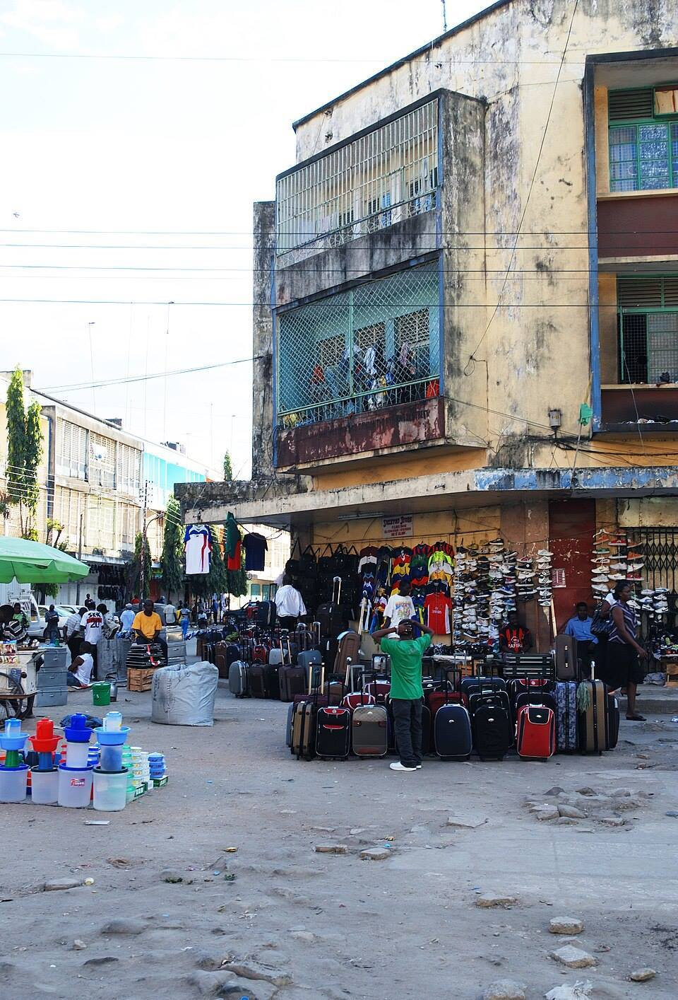

Parte 3 · Informazioni pratiche
Come funziona
Tutto quello che serve per muoversi, mangiare, restare connessi, stare bene e sentirsi a casa in Tanzania. Le cose che non si trovano sul programma del viaggio.
Foto: Mercato di Kariakoo, Dar es Salaam · Moongateclimber · Pubblico dominio
Come arrivare
Atterrare a Dar es Salaam
Il viaggio comincia all'aeroporto internazionale Julius Nyerere (codice DAR), a circa 12 km dal centro di Dar es Salaam. Dall'Italia non ci sono voli diretti: le combinazioni più comuni passano dal Golfo (Doha, Dubai), da Istanbul, Addis Abeba o Nairobi. I voli intercontinentali non sono inclusi nella quota WeRoad: ognuno prenota il suo, rispettando il ritrovo delle 18:00 del 29 novembre.
- Scali in Africa: se fate scalo in Etiopia o in Kenya, verificate con il medico e la compagnia se serve il certificato della febbre gialla (dipende anche dalla durata dello scalo).
- All'arrivo: controllo del passaporto e del visto (eVisa stampato o visto all'arrivo, 50 USD), poi ritiro bagagli e dogana. Calcolate da 30 minuti a più di un'ora.
- Dall'aeroporto all'hotel: taxi ufficiali all'uscita o app come Bolt. Il tragitto dura 30–60 minuti a seconda del traffico, che a Dar è leggendario. Concordate il prezzo prima di salire, oppure chiedete al coordinatore se è previsto un transfer.
- Il volo per Mbeya (giorno 2) è un volo interno incluso nella quota. Sulle tratte interne Air Tanzania indica di solito 23 kg in stiva e 7 kg a mano, ma su alcuni aerei più piccoli i limiti sono più bassi: verificate il vostro biglietto.
Come muoversi
Jeep, bus, bajaji
Nel nostro viaggio quasi tutti gli spostamenti sono organizzati: volo interno, jeep privata sugli altopiani, jeep 4x4 nel Ruaha, bus di linea da Iringa a Dar. Ma è utile sapere come si muovono i tanzaniani.
- Bus di linea: collegano tutte le città, partono all'alba e sono economici. Il viaggio Iringa–Dar dura 9–11 ore lungo la statale A7, con soste brevi. Le compagnie migliori hanno posti assegnati e cinture: usatele.
- Bajaji: i tuk-tuk a tre ruote, ideali per tragitti brevi in città. Il prezzo si concorda prima, oppure si prenotano con l'app Bolt a Dar es Salaam.
- Boda boda: i mototaxi. Veloci ed economici, ma sono la prima causa di incidenti stradali nelle città: meglio evitarli, e mai senza casco.
- Daladala: i minibus urbani, stracolmi e colorati. Un'esperienza, ma non con lo zaino e la sera.
- Treni: il nuovo treno elettrico SGR collega Dar es Salaam con Morogoro e Dodoma. La storica ferrovia TAZARA, costruita negli anni '70 con l'aiuto della Cina, passa da Mbeya diretta in Zambia.
In Tanzania si guida a sinistra, come nel Regno Unito: attraversando la strada, guardate prima a destra.
Dove alloggiare
Dalla guest house alla tenda nel parco
Gli alloggi sono scelti da WeRoad e saranno confermati dal coordinatore: in questa guida non indico nomi di strutture che non posso verificare. Ecco cosa aspettarsi dai diversi tipi.
- Hotel e guest house in città (Dar, Mbeya, Iringa): camere semplici con bagno privato, ventilatore o aria condizionata, zanzariera, wifi lento. L'acqua calda c'è, ma non sempre e non subito.
- Al villaggio: secondo il programma, una sistemazione «comfort» con bagno a uso esclusivo del gruppo. Aspettatevi l'elettricità a orari, forse un generatore o pannelli solari, docce essenziali. È parte dell'esperienza.
- Nel Ruaha: la «notte wow» del programma. Di solito nei parchi si dorme in tented camp o in lodge, con il rumore degli animali intorno. Di notte non si esce dalla tenda da soli: lo staff accompagna con la torcia.
Ovunque: la zanzariera va chiusa bene sotto il materasso prima del tramonto. Ci sono frequenti interruzioni di corrente: tenete la frontale vicino al letto.
Mangiare e bere
Karibu chakula: a tavola
In Tanzania se qualcuno sta mangiando quando arrivate, vi dirà karibu chakula, «benvenuto al cibo», cioè «unisciti a noi». Non è una formula vuota: il cibo si condivide, e rifiutare tutto può sembrare scortese. Basta assaggiare. La cucina tanzaniana è semplice, sostanziosa e stagionale: un amido (ugali, riso, banane, patate) al centro, un sugo o una carne, una verdura. Sulla costa entra il cocco con le spezie dei commerci con l'India e l'Arabia. Sugli altopiani dominano mais, patate, fagioli, avocado e il tè.
Le regole non scritte
- Lavarsi le mani a tavola. Prima del pasto qualcuno passa con una brocca d'acqua tiepida e un catino: tendete le mani, lavatele, ringraziate.
- Si mangia con la mano destra. Con l'ugali si fa una pallina, si preme il pollice per fare un incavo e la si usa come cucchiaio per il sugo. Le posate di solito ci sono, ma provate almeno una volta: i vostri ospiti apprezzeranno.
- La sinistra resta fuori dal piatto, e non si usa per porgere il cibo.
- Gli anziani e gli ospiti vengono serviti per primi. Aspettate che il padrone di casa inizi.
- Finire tutto significa apprezzare. Ma se lasciate un po' nel piatto è un segnale che siete sazi: altrimenti vi riempiranno di nuovo il piatto.
- L'ugali è sacro. È il simbolo del pasto stesso: per molti tanzaniani, se non c'è l'ugali «non si è mangiato». Al villaggio sarà quasi certamente il centro di ogni pasto.
I piatti da conoscere
I prezzi sono stime per ristorantini e bancarelle locali (1 € ≈ 2.950 TZS, novembre 2026): nei ristoranti per turisti si spende da due a cinque volte tanto.
Differenze regionali
- Dar es Salaam e la costa: cucina swahili, con cocco, pesce, spezie, pilau e biryani, frutti tropicali. Anche le influenze indiane: samosa (qui sambusa), chapati, curry.
- Mbeya: zona fertile e vulcanica, piena di frutta (banane, avocado, mango), riso della valle di Usangu e caffè sulle colline.
- Njombe e gli altopiani (Mpanga Kipengere, Mavanga): il regno di patate, mais, fagioli, piselli, cavoli, avocado e tè. Il clima fresco rende la cucina più sostanziosa. Qui potreste assaggiare l'ulanzi.
- Iringa: mercato ricco di verdure e frutta, pomodori, e la cucina «di passaggio» della statale.
- I Masai hanno una cultura alimentare legata al bestiame: latte, carne e, nei riti, il sangue degli animali. Non è cibo che troverete nei ristoranti.
Bevande
- Acqua: solo in bottiglia sigillata o filtrata. Ovunque si trova acqua confezionata.
- Soda (le bibite gassate) e succhi di frutto della passione, mango, ananas: ottimi e freschissimi.
- Birre: le lager nazionali più diffuse sono Safari, Kilimanjaro e Serengeti. Si chiede la birra «baridi» (fredda), perché non è scontato.
- Konyagi: il distillato nazionale, simile a un gin, spesso mescolato con soda.
- Bevande tradizionali: l'ulanzi (vino di bambù) degli altopiani meridionali, la mbege (birra di banana) del Kilimanjaro, birre di sorgo e di miglio fatte in casa.
Viaggio responsabile
Al villaggio l'alcol può essere un tema delicato: molte famiglie sono religiose e osservanti. Non bevete durante le attività e chiedete al coordinatore se e dove è appropriato farlo. E non offrite alcol ai ragazzi.
Salute
Stare bene in viaggio
Vaccinazioni, febbre gialla e profilassi sono nella sezione Prima di partire. Qui le regole pratiche per i giorni di viaggio.
- Malaria: repellente dal tardo pomeriggio, maniche lunghe la sera, zanzariera. Se avete febbre, brividi o mal di testa forte, durante il viaggio o fino a qualche mese dopo il rientro, fate subito un test della malaria e dite al medico che siete stati in Tanzania.
- Acqua e cibo: acqua sigillata o filtrata, anche per i denti. Cibi cotti e caldi. Gel disinfettante prima di mangiare.
- Acqua dolce: nei laghi e nei fiumi lenti della Tanzania esiste il rischio di schistosomiasi (bilharzia), un parassita che penetra attraverso la pelle. I torrenti veloci di montagna sono meno a rischio, ma prima di fare il bagno nelle piscine naturali di Mpanga Kipengere chiedete alla guida locale. Asciugatevi subito, strofinando bene.
- Sole: siamo appena sotto l'equatore. Il sole brucia anche con il cielo coperto e in quota: crema SPF 50 e cappello.
- Mosche tse-tse: nelle zone boscose del Ruaha pungono attraverso i vestiti sottili. Evitate il blu e il nero, tenete chiusi i finestrini quando le vedete.
- Farmacie (duka la dawa): nelle città ce ne sono molte. Al villaggio e nei parchi no: portate tutto il necessario.
- Ospedali: le strutture migliori sono a Dar es Salaam (per esempio l'Aga Khan Hospital e l'ospedale nazionale Muhimbili). Nelle regioni ci sono ospedali regionali e di riferimento a Mbeya e a Iringa, con servizi più limitati. Per i casi gravi serve l'evacuazione aerea: verificate che l'assicurazione la copra.
Media e connessione
Restare connessi (e staccare)
- Operatori: Vodacom, Airtel, Yas (l'ex Tigo) e Halotel. Nel sud Vodacom e Airtel hanno di solito la copertura più ampia.
- SIM locale: compratela in un negozio ufficiale dell'operatore (ce ne sono all'aeroporto e in città), non dai venditori per strada. Serve il passaporto, e in alcuni casi anche le impronte digitali. Le regole sulla registrazione sono cambiate nel 2025, quindi chiedete in negozio. Il costo è basso: pochi euro per diversi GB di traffico. Fatevi attivare il pacchetto dati (bando) prima di uscire dal negozio.
- eSIM: le app di eSIM internazionali sono comode (si attivano prima di partire), ma costano di più e si appoggiano alle reti locali. Gli operatori tanzaniani in genere non vendono eSIM ai turisti. Controllate che il telefono sia sbloccato e compatibile.
- Copertura: buona nelle città e lungo le strade principali, debole o assente nel Ruaha, in molte zone degli altopiani e forse al villaggio. Il wifi degli alloggi è spesso lento.
- Elettricità: prese di tipo G (britanniche), 230 V. Le interruzioni di corrente sono frequenti: power bank sempre carico.
- Soldi dal telefono: in Tanzania si paga moltissimo con il cellulare (M-Pesa, Airtel Money e simili). Per i turisti non è facile da attivare: noi useremo contanti e carte.
Feste ed eventi culturali
Il 9 dicembre, Uhuru Day
Il 9 dicembre 1961 il Tanganica, l'attuale Tanzania continentale, divenne indipendente dal Regno Unito, con Julius Nyerere come primo ministro. Nel 1964 l'unione con Zanzibar diede vita alla Repubblica Unita di Tanzania. Il 9 dicembre 2026 è il 65° anniversario, e cade proprio mentre saremo nel Ruaha.
Uhuru significa «libertà». È festa nazionale: uffici, banche e molti negozi sono chiusi, sventolano le bandiere verde, oro, nero e blu, e spesso ci sono cerimonie ufficiali con parate e discorsi nella capitale e nei capoluoghi. Per noi la giornata cambia poco, perché saremo tra il parco e il villaggio masai. Ma è un'occasione per chiedere alle guide cosa significa per loro questa data, e cosa pensano di Nyerere, il Mwalimu («maestro»).
Il contesto
Dopo le elezioni dell'ottobre 2025 ci sono state proteste con vittime, e a giugno 2026 il governo ha vietato i comizi politici in tutto il paese. Nei giorni festivi nazionali possono esserci forti misure di sicurezza. Tenetevi lontani da manifestazioni e assembramenti politici, non fotografate polizia e militari, e seguite le indicazioni del coordinatore.
Natale in Tanzania
Partiremo l'11 dicembre, ma l'aria del Natale si sentirà già. Gli altopiani di Njombe e Iringa sono a maggioranza cristiana (cattolici e luterani soprattutto): nelle chiese si preparano i cori dell'Avvento, nelle città compaiono le prime decorazioni e i mercati si riempiono. La messa della domenica al villaggio (6 dicembre) sarà probabilmente lunga, cantata e molto partecipata: un'esperienza da non perdere, anche per chi non è credente.
Il 25 e il 26 dicembre sono festivi in tutto il paese. Il Natale tanzaniano è soprattutto una festa di famiglia: chi vive in città torna al villaggio, si cucinano pilau e carne alla brace, si va in chiesa e si fa visita ai parenti.
Safari
Come funziona un game drive
Safari in swahili significa semplicemente «viaggio». Il game drive è il giro in jeep per osservare gli animali. Nel Ruaha avremo un pomeriggio, una notte nel parco e un'alba: la combinazione migliore per i predatori.
- Il mezzo: jeep 4x4 con tetto apribile (pop-up roof), 6–7 posti, guida-autista certificata. Si sta in piedi solo a jeep ferma.
- Orari: i parchi aprono intorno alle 6:00 e chiudono tra le 18:00 e le 19:00. Il game drive del mattino va dall'alba alle 10–11, quello pomeridiano dalle 15:30 al tramonto. A mezzogiorno gli animali (e le persone) riposano.
- In jeep: binocolo, macchina fotografica, acqua, crema solare, cappello, uno strato caldo per l'alba (alle 6 fa fresco), una bandana contro la polvere.
- Pause bagno: si fanno solo nei punti autorizzati o, in caso di necessità, la guida sceglie un luogo sicuro. È il famoso «checking the tyres»: controllare le gomme.
Galateo in jeep
- Restate seduti con la jeep in movimento e tenete braccia e teste dentro il veicolo.
- Voce bassa, niente musica, niente richiami agli animali.
- Alternate i posti migliori: chi è stato al finestrino lato fiume ieri, oggi lascia il posto.
- Non chiedete alla guida di avvicinarsi troppo o di uscire dalla pista: è vietato, e può costarle la licenza.
- Ascoltate la guida: se dice di sedersi o di fare silenzio, c'è un motivo.
- Niente cibo in vista quando ci sono babbuini o scimmie.
Attività all'aperto
A piedi, oltre la jeep
- Mpanga Kipengere (giorno 3): cascate e piscine naturali. Il sentiero verso le cascate Kimani passa su rocce bagnate: scarpe con buona suola. Prima di fare il bagno chiedete alla guida dove è sicuro.
- Il villaggio: le partite di calcio con i ragazzi saranno probabilmente il momento più bello della settimana. Portate scarpe che possono sporcarsi e preparatevi a perdere.
- Iringa, se resta del tempo: il sito dell'Età della Pietra di Isimila, a circa 20 km dalla città, uno dei siti più ricchi dell'Africa orientale di strumenti in pietra di tipo acheuleano, vecchi di decine di migliaia di anni, tra spettacolari pinnacoli di arenaria scolpiti dall'erosione. Oppure Kalenga e il museo dedicato a Mkwawa, il capo degli Hehe che resistette ai tedeschi negli anni '90 dell'Ottocento. Il suo cranio, portato in Germania, fu restituito alla Tanzania nel 1954.
- Dar es Salaam: una camminata sul lungomare di Coco Beach al tramonto, il mercato del pesce di Kivukoni all'alba, il Museo Nazionale, una gita in barca all'isola di Bongoyo se c'è mezza giornata libera.
Criminalità e sicurezza personale
Prudenti, non spaventati
La grande maggioranza dei viaggi in Tanzania si svolge senza problemi, e in gruppo con un coordinatore il rischio è ancora più basso. Ma le autorità britanniche e italiane segnalano un rischio di criminalità, anche armata, in tutto il paese. Ecco le regole che contano.
- A Dar es Salaam: gli scippi da moto o da auto sono il reato più comune. Borsa a tracolla sul lato opposto alla strada, telefono in tasca, niente gioielli. La sera muovetevi in taxi o bajaji chiamati dalla struttura o da un'app, non a piedi.
- Contanti: pochi in tasca, il resto diviso tra zaino e marsupio interno. Prelevate di giorno, agli sportelli dentro le banche o i centri commerciali.
- Truffe: diffidate di chi offre cambi di valuta per strada, di «guide» non richieste e di chi chiede soldi per una «multa» senza ricevuta.
- Zone da evitare: le autorità sconsigliano i viaggi vicino al confine con il Mozambico (regione di Mtwara) e segnalano rapine nelle regioni al confine con il Burundi. Il nostro itinerario è lontano da entrambe.
- Manifestazioni: tenetevi lontani da proteste e assembramenti politici.
- Fotografie: vietato fotografare edifici governativi, militari, polizia, aeroporti, ponti e infrastrutture. Si rischia il sequestro del telefono, o peggio.
- Leggi da conoscere: le relazioni tra persone dello stesso sesso sono reato e le pene sono severe; la discrezione in pubblico è d'obbligo per tutti. Le pene per possesso di droghe sono durissime. I sacchetti di plastica sono vietati. Gli abiti mimetici sono riservati ai militari.
- Viaggiatrici: possono capitare commenti o insistenze. Abbigliamento coprente, nessuna risposta, fermezza. Nelle situazioni sgradevoli rivolgetevi subito al coordinatore o al gruppo.
Cultura, usi e costumi
Saluti lunghi e tempi lenti
La Tanzania è un mosaico di oltre 120 gruppi etnici, tenuti insieme da una lingua comune, lo swahili, e da un'idea di nazione costruita da Nyerere dopo l'indipendenza. È uno dei paesi più pacifici dell'Africa orientale, e i tanzaniani ne vanno fieri. Secondo le stime più diffuse, circa sei tanzaniani su dieci sono cristiani e circa uno su tre musulmano, e la convivenza è la regola. Sugli altopiani del sud prevalgono i cristiani, sulla costa e a Zanzibar i musulmani.
- Il saluto è tutto. Non si chiede un'informazione, non si compra, non si entra in una stanza senza salutare. Il saluto può durare un minuto: «Habari za asubuhi?» (come va la mattina?), «Nzuri» (bene), «Habari za nyumbani?» (e a casa?)…
- Agli anziani si dice Shikamoo («ti rispetto»), e loro rispondono Marahaba. Usatelo al villaggio: farà sorridere tutti.
- La stretta di mano è lunga, a volte si continua a tenersi la mano mentre si parla. Con le persone più anziane si sostiene l'avambraccio destro con la mano sinistra in segno di rispetto.
- Effusioni in pubblico: baci e abbracci tra coppie in pubblico non sono ben visti, anche tra persone sposate.
- Abbigliamento: spalle e ginocchia coperte fuori dalle zone turistiche, soprattutto per le donne e soprattutto al villaggio e in chiesa.
- Il tempo: pole pole, piano piano. Gli orari sono indicativi e la fretta è considerata un po' maleducata.
- L'ora swahili: i tanzaniani contano spesso le ore dall'alba, cioè dalle 6. Saa moja («ora uno») sono le 7 del mattino, saa nne le 10. Se qualcuno vi dà appuntamento «alle due», chiedete se intende le 8!
- Chiedere prima di fotografare, sempre. E mai foto da «zoo umano» nei villaggi masai o nei mercati.
Acquisti
Cosa portare a casa (e cosa no)
- Kanga e kitenge: i tessuti stampati che vestono le donne tanzaniane. Il kanga ha sempre un proverbio in swahili stampato in basso: chiedete di tradurvelo. Si comprano a Kariakoo (Dar) o nei mercati di ogni città.
- Quadri tingatinga: la pittura colorata e naif nata a Dar es Salaam negli anni '60 con il pittore Edward Saidi Tingatinga. Nella cooperativa degli artisti a Dar si comprano direttamente da chi li dipinge.
- Sculture makonde: le intricate sculture in legno scuro della tradizione makonde, al mercato degli intagliatori di Mwenge (Dar). Chiedete la ricevuta.
- Gioielli di perline masai: braccialetti e collane, meglio se acquistati da cooperative di donne.
- Cibo: caffè di Mbeya, tè di Njombe o Mufindi, spezie, miele.
- Cesti e borse intrecciate, utili anche al posto dei sacchetti di plastica.
Contrattare
Nei mercati e dagli artigiani è normale contrattare. Salutate, chiedete il prezzo, rispondete con una cifra intorno alla metà e trovate un accordo nel mezzo, sorridendo. Se il prezzo è già basso, non insistete: la differenza per voi è di pochi centesimi. Nei negozi con i prezzi esposti e nei supermercati non si contratta.
Viaggiare in gruppo
Quindici sconosciuti in una jeep
Tredici giorni intensi, trasferimenti lunghi, una settimana in un villaggio: il gruppo farà la differenza tra un buon viaggio e un viaggio indimenticabile. Ecco qualche regola nata dall'esperienza.
- Rotazione: posti in jeep e in bus, compagni di stanza (se previsto), turni per il finestrino buono.
- Puntualità: in Tanzania si va pole pole, ma la jeep delle 6 non aspetta. Un ritardo di un singolo si moltiplica per quindici.
- Cassa comune: circa 200 €, gestita dal coordinatore per trasporti, guide ed extra decisi insieme. Tenete traccia delle spese condivise con un'app come Splitwise.
- Spazi: c'è chi si ricarica stando con gli altri e chi stando da solo. Rispettate entrambi, e non prendetevela se qualcuno si isola per un'ora con le cuffie.
- Al villaggio si lavora come squadra: non tutti sono bravi con i bambini o con il cemento, ma tutti possono fare qualcosa. Ruoli chiari aiutano.
- Foto: un album condiviso del gruppo (Google Foto o simili) evita cento messaggi. Ma niente foto di bambini o persone del villaggio sui social.
- Problemi: un disagio, un malessere, un conflitto si dicono subito al coordinatore, in privato. Prima si affrontano, meglio è.
Da sapere
Tutto in una tabella
| Visto | Obbligatorio. eVisa turistico ordinario 50 USD sul portale ufficiale visa.immigration.go.tz, oppure all'arrivo. Passaporto valido almeno 6 mesi oltre il rientro, con 2 pagine libere. |
|---|---|
| Valuta | Scellino tanzaniano (TZS). 1 € ≈ 2.950 TZS; 10.000 TZS ≈ 3,40 € (11/11/2026). Banconote da 500 a 10.000 TZS. |
| Carte e contanti | Bancomat nelle città (meglio Visa). Contanti indispensabili al villaggio e nei mercati. Dollari ed euro di riserva in banconote recenti e integre. |
| Prese e corrente | Tipo G (britannica), a volte D; 230 V, 50 Hz. Serve un adattatore. |
| Fuso orario | UTC+3, cioè +2 ore rispetto all'Italia in dicembre. Alba verso le 6:00–6:15, tramonto verso le 18:30–18:45. |
| Prefisso telefonico | +255 |
| Lingue | Swahili e inglese ufficiali; molte lingue locali. |
| Guida | A sinistra. |
| Acqua | Non potabile dal rubinetto: solo acqua sigillata o filtrata. |
| Clima a dicembre | Dar: caldo umido, 25–32 °C. Altopiani: 10–24 °C, piogge e nebbie. Ruaha: 20–33 °C, primi temporali pomeridiani. Stime indicative. |
| Assicurazione | Quella WeRoad inclusa (spese mediche fino a 60.000 € nel mondo). Valutate un'integrazione con evacuazione aerea. |
| Sacchetti di plastica | Vietati dal 2019, anche in valigia. Ammessi i sacchetti richiudibili trasparenti per i liquidi da aereo, se poi li riportate a casa. |
| Mance | Attese da guide, autisti e staff: vedi la tabella delle mance. |
| Emergenze | Polizia 112 · Vigili del fuoco 114 · Ambulanza 115 · Unità di Crisi della Farnesina +39 06 36225. |
Informazioni verificate l'11/11/2026 su fonti ufficiali e di viaggio (governo britannico, Viaggiare Sicuri, operatori telefonici, Air Tanzania). Prezzi e cambi indicativi: controllate sempre prima di partire.